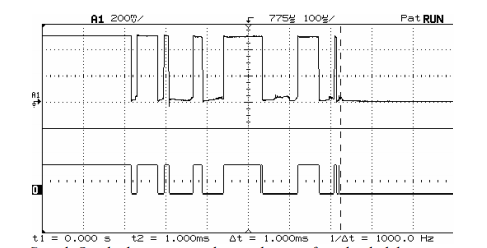
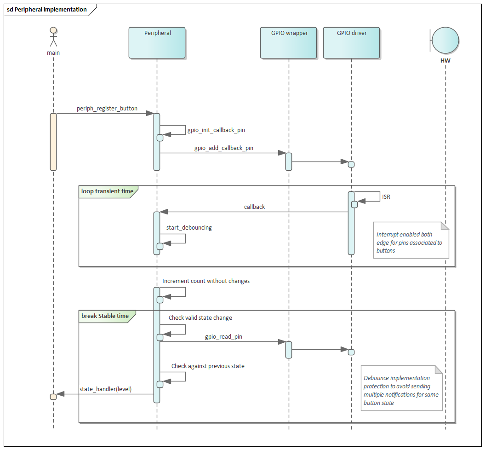

Peripheral management¶
This section describes the Embedded Controller human interface device management module, which mainly handles buttons and switches associated with human interaction.
Switches (when applicable)¶
Laptop lid
Screen rotation lock
This module is used to track the state of switches and notifies other modules when a state change occurs in any of them.
Button (press, released)
Switch (open, closed)
The main role of this module is to deal with the undesirable effect that any mechanical switch has whenever it bangs together causing electrical rebound before settling down after the electrical transient time.

Therefore, this module is mainly involved in removing these undesired changes or debouncing.
Note
Disable this module if your board already has debouncing by hardware.
Implementation¶
Mechanical switch debouncing is implemented using cooperative threading to track the state transitions from all buttons registered within the system.
This module uses a cooperative thread to track the state transitions from all buttons registered within the system.
Callbacks per button/switch are registered within the GPIO driver to track different state transitions for button and switches.

Note
This module assumes that the gpios connected to buttons or switches are already configured during board initialization as input. It also assumes that interrupt for changes in the state is enabled and configured to trigger on both edges.

When the GPIO driver notifies this module of a GPIO level change in either direction, the pin is moved into “debouncing” state. Once the button is debounced, the pin is moved back to ‘stable’ state.
The state of a button/pin changes from debouncing to stable state by means of a counter. Once the debounce process begins, a counter is increased every millisecond. If the counter reaches zero without any additional level change, it means the “bouncing” or electrical transient period is considered over. This results in a state transition out of “debouncing” state and their respective observers are notified.
Before the counter expires, if there is another callback indicating a change on the pin, the counter is reset back to maximum DEBOUNCE_TIME and the pin continues debouncing.

Note
This module considers that most buttons or switches won’t exhibit bouncing with a duration exceeding 5 milliseconds, hence DEBOUNCE_TIME is set to 5.
Additionally, in order to handle cases where circuit is too noisy, the module filters events and only notifies the observers only when an actual change has occurred.